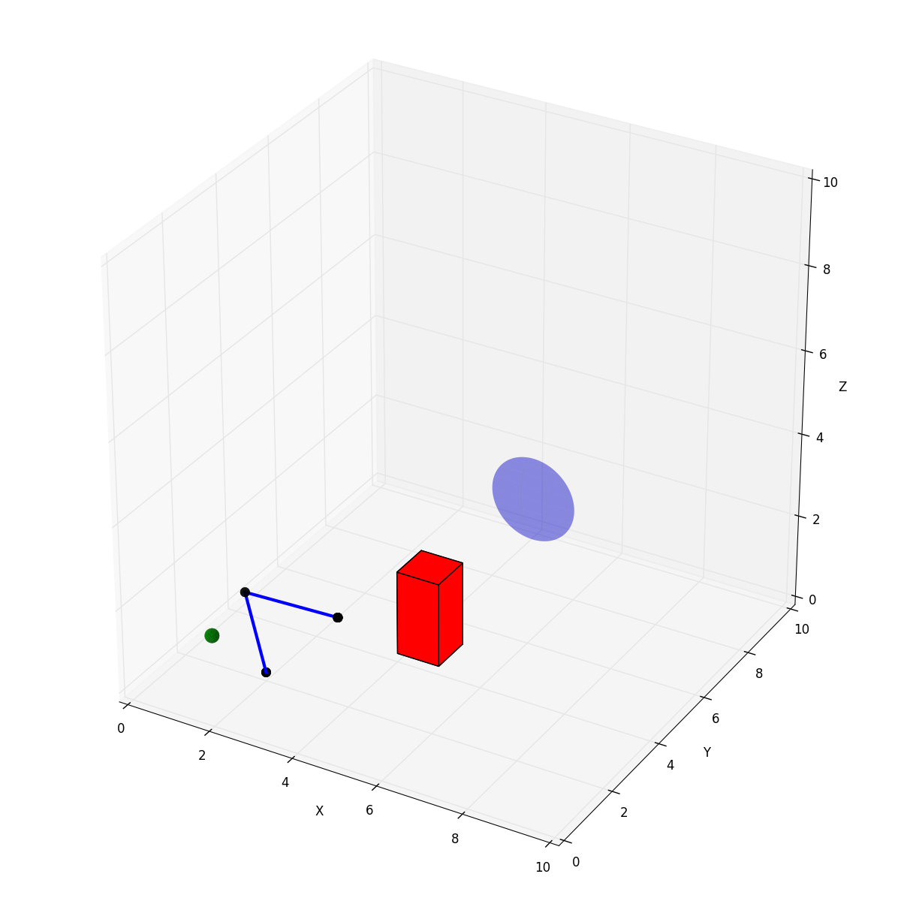

Tutorial¶
In this tutorial, we will briefly walk through creating arms, setting up simulation environments, plotting and animating these environments, saving robot movement paths, and creating animated videos.
Creating Arms¶
Arms in Maddux consist of a series of Link objects, which are defined by DH Parameters. Each link has a theta (angle), offset, length, and twist parameter. Each link can also have a constrained theta, a max velocity, and a joint size (for visualizations and collisions).
If you aren’t familiar with DH Parameters, I recommend you read up on them first, as they can be a bit confusing. For example, the distance from one joint to another can be defined by either the offset, or the length.
Here is our definition of a “Simple Human Arm” which is already defined for you in maddux.robots.predefined_arms.
from link import Link
from arm import Arm
import numpy as np
seg1_len = 1.0
seg2_len = 2.0
# Our seven "links". Only two of these have a length or offset.
L1 = Link(0, 0, 0, 1.571)
L2 = Link(0, 0, 0, -1.571)
L3 = Link(0, seg1_len, 0, -1.571)
L4 = Link(0, 0, seg2_len, -1.571)
L5 = Link(0, 0, 0, 1.571)
L6 = Link(0, 0, 0, 1.571)
L7 = Link(0, 0, 0, 0)
# Create an array of them
links = np.array([L1, L2, L3, L4, L5, L6, L7])
# Create an initial joint config for each link.
# q0[0] is the theta for Link1
# q0[1] is the theta for Link2
# and so on.
q0 = np.array([0, 0, 0, -2.0, 0, 0, 0])
# Then create an arm with these links, the initial config q0, and a name
robot = Arm(links, q0, 'simple_human_arm')
Of note here is that only two links have a offset or length, giving us a two link arm. L7 is not necessary at all, and is simply there to replace a possible end effector.
Setting up and Plotting an Environment¶
Environments are central to all simulations in Maddux. They allow you to group together sets of dynamic (movable) and static (stationary) objects and a robot into a “room” of sorts that allows for interactions of all of these objects.
To define an environment, we will first define a few objects, then we will create a robot (from our predefined robots), and we will add these to the environment.
import numpy as np
from maddux.robots.predefined_robots import simple_human_arm
from maddux.objects import Ball, Target, Obstacle
from maddux.environment import Environment
# Create an arm with a specific config and base position
q0 = np.array([0.5, 0.2, 0, 0.5, 0, 0, 0])
base_pos = np.array([2.0, 2.0, 0.0])
# And link segments of length 2.0
arm = simple_human_arm(2.0, 2.0, q0, base_pos)
# We then create a ball, target, and obstacle
ball = Ball(position=[2.0, 0.0, 2.0], radius=0.15)
target = Target(position=[5.0, 8.0, 2.0], radius=0.5)
obstacle = Obstacle([4, 4, 0], [5, 5, 2])
# And use these to create an environment with dimensions 10x10x10
env = Environment(dimensions=[10, 10, 10],
dynamic_objects=[ball],
static_objects=[obstacle, target],
robot=arm)
We can then interact with these objects, plot them, animate their interactions, etc.
If we want to plot this environment, all we have to do is
env.plot()
Which would generate an environment that looks like this:
Inverse Kinematics and Animations¶
Given the above environment, lets say we want to have the arm find a joint configuration that has the end effector of the arm touch the ball. Given the ball location, we can use our iterative inverse kinematics solver built into the Arm class to find a possible joint configuration.
arm.ikine(ball.position)
Our inverse kinematic solver automatically caches each set of configurations that make up its path into a variable on the arm. With this path saved, we can then animate this process by calling animate for a specified duration.
env.animate(3.0)
Saving paths and creating videos¶
In the above example of inverse kinematics, ikine saved the path it generated into a variable on the arm. After calling some function that modifies the joint configurations (update_angles, update_link_angle, ikine) and having it cache its changes, we can write that path to a file.
arm.save_path('filename_to_save_to')
With the series of joint configurations saved to a file, we can later use this to re-run the animation, or to save the animation as a MP4 video. To do so, we simply call save_path on the arm. We are assuming here that our environment is defined in maddux.predefined_environments.py.
To simply rerun the animation, we can run
python maddux/utils/animate_path.py --input tutorial_path.npy --environment tutorial
If we want to create a video called tutorial.mp4, we would change the above command to this
python maddux/utils/animate_path.py --input tutorial_path.npy --environment tutorial --output tutorial.mp4
Which would create a video that I then turned into this GIF.

Conclusion¶
This was meant to be a quick introduction to different aspects of the toolkit. There are a whole host of other potentially useful features, like having dynamic objects have velocity and movement, letting an arm hold and move objects with its end effector, giving arms joint velocities, and calculating end effector velocities based on joint velocities. The hope is that this provides a light weight and flexibile toolkit to build on and modify to suit your needs, and lets you get up and running with crazy ideas as quickly as possible.